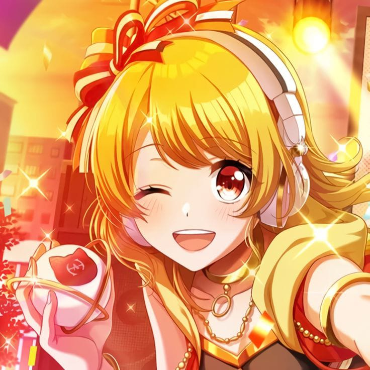
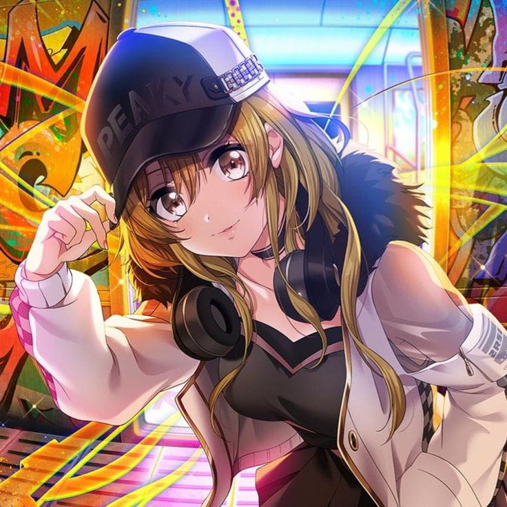
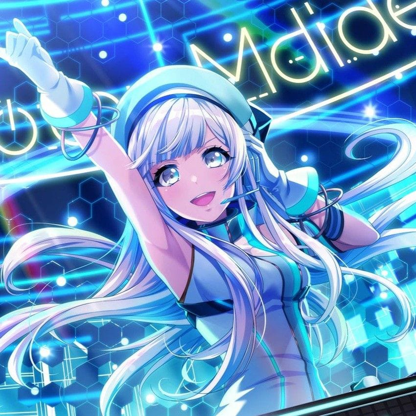
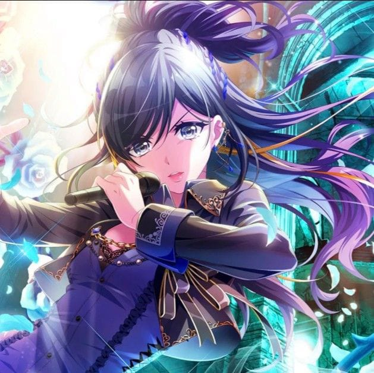
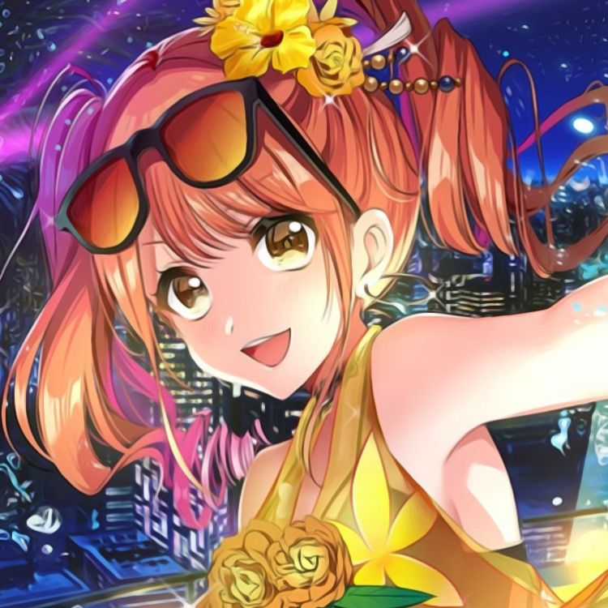
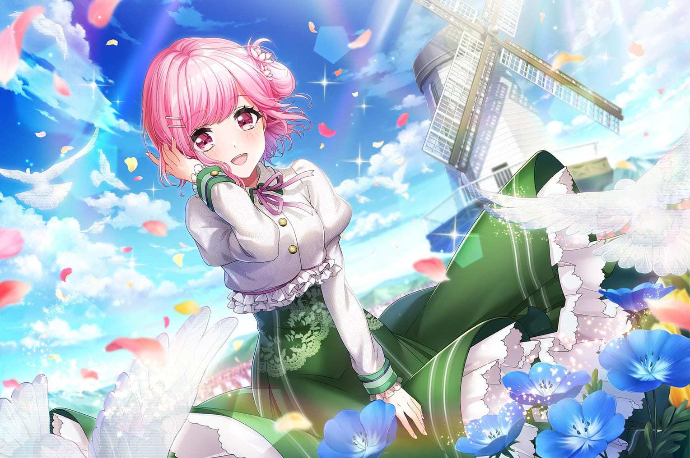
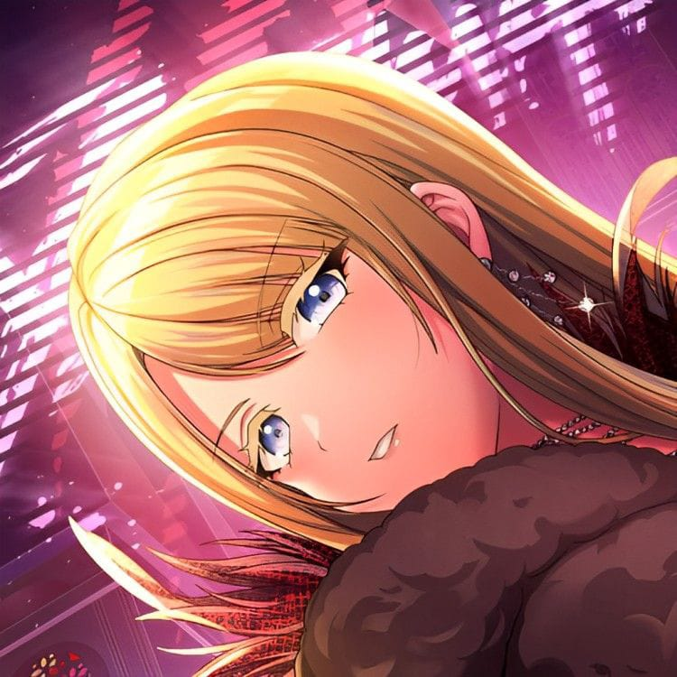

Happy Around!
Character Wiki








Nova Mix es un proyecto independiente creado con pasión para la comunidad de D4DJ.
Tu apoyo ayuda a mantener la wiki activa, agregar nuevos personajes, mejorar funciones y desarrollar futuros proyectos.
¡Gracias por formar parte de esta comunidad!
🚧 El sistema de cuentas estará disponible próximamente.
Podrás crear tu perfil, guardar tus preferencias y disfrutar de nuevas funciones de Nova Mix.